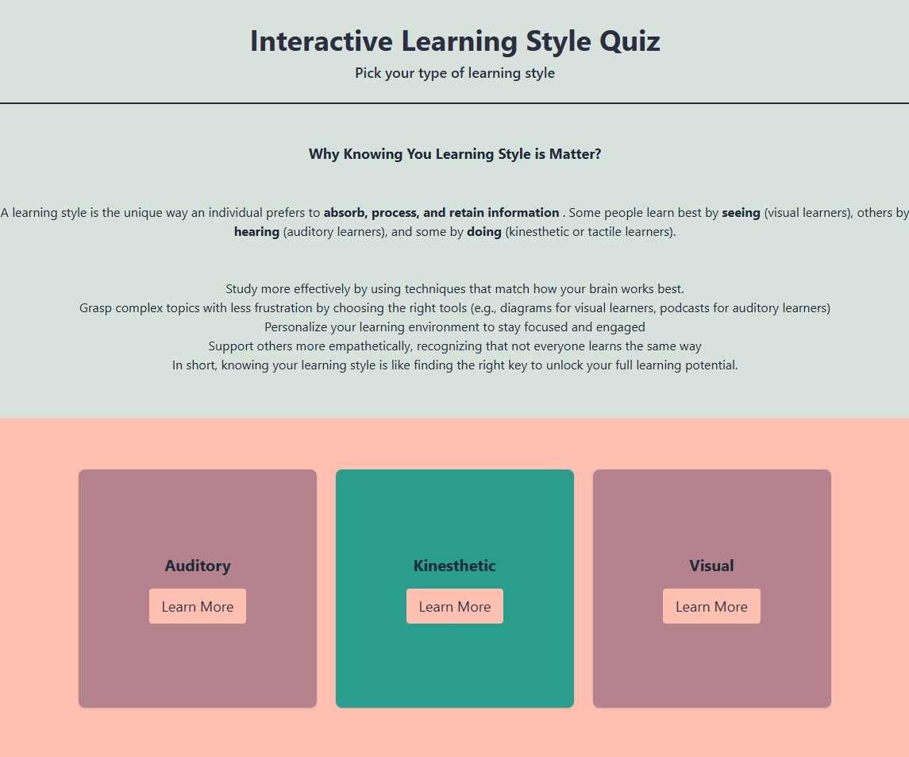
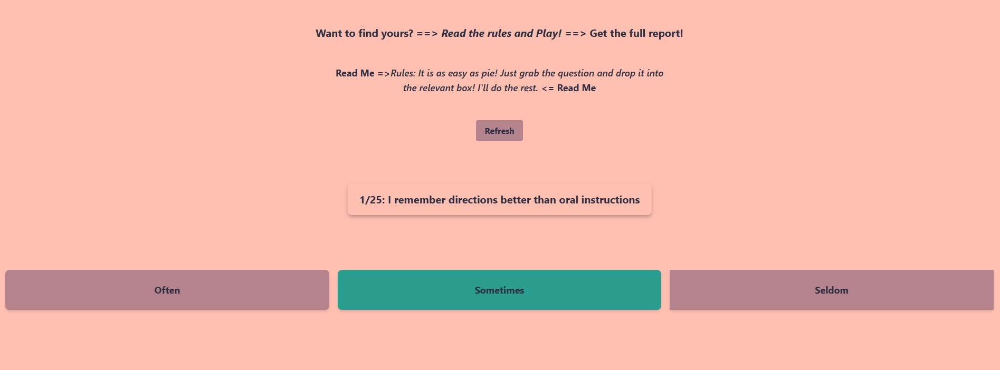
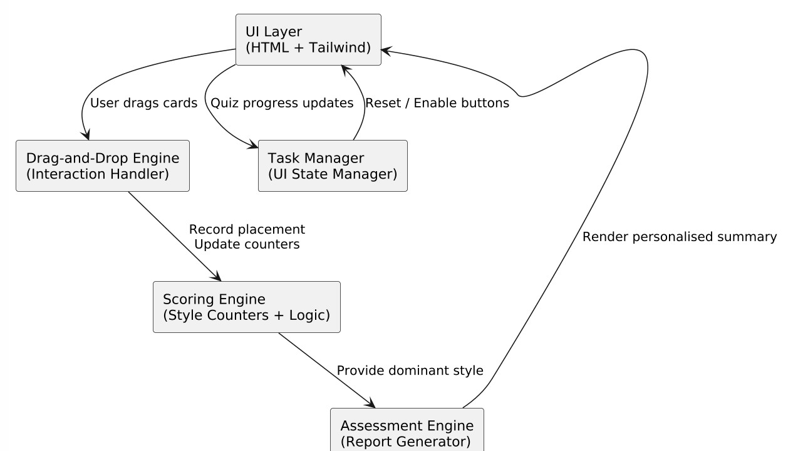
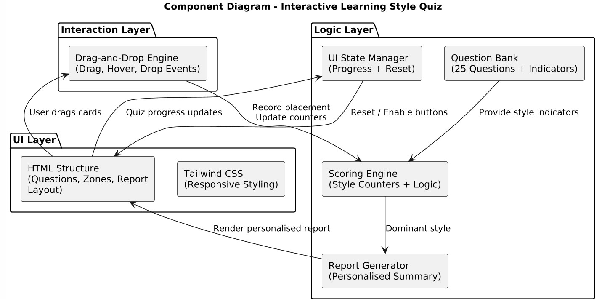
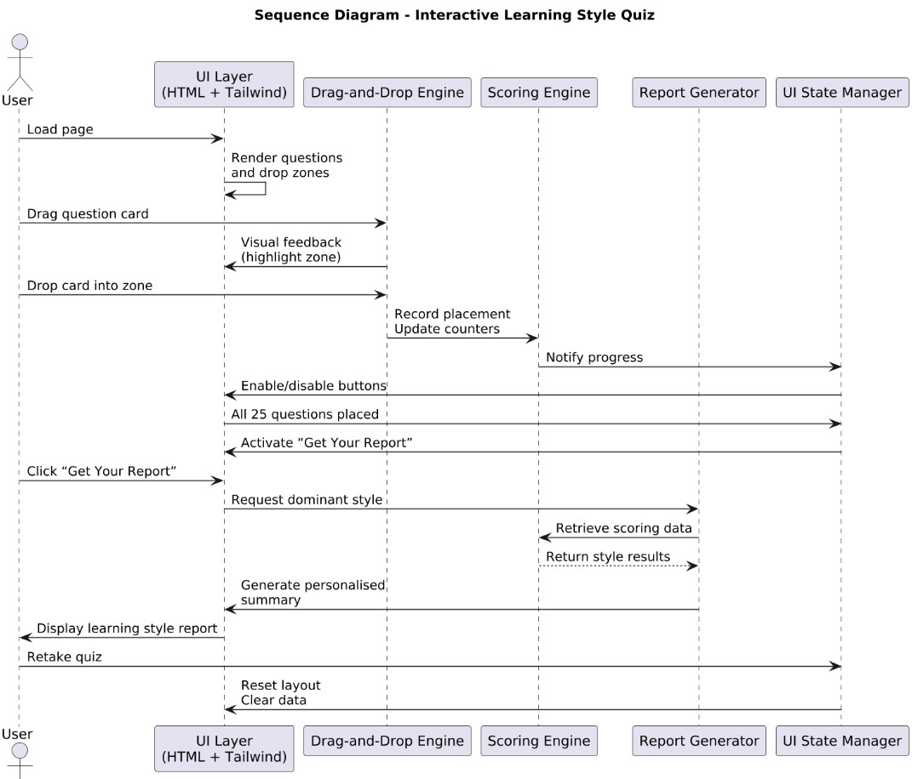
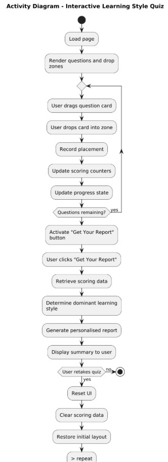

The Interactive Learning Style Quiz was designed to transform a traditional questionnaire into a playful, intuitive experience. Instead of clicking through static radio buttons, users engage with a drag‑and‑drop interface that encourages exploration and reflection. The quiz consists of 25 questions based on real learning‑style indicators and helps users discover whether they lean toward Visual, Auditory, or Kinesthetic learning. Once all questions are sorted into “Often,” “Sometimes,” or “Seldom,” the system calculates the dominant learning style and generates a personalised report. This report includes study strategies, recommended tools, and practical tips tailored to the user’s strengths. The goal was to create an experience that feels interactive, accessible, and genuinely helpful, a small tool that empowers people to understand themselves better and learn more effectively.
The quiz is built using a lightweight, client‑side architecture focused on speed, accessibility, and simplicity. HTML provides the semantic structure, Tailwind CSS handles styling and responsive layout, and JavaScript manages all interactive behaviour. The architecture centres around three core layers: UI Layer (HTML + Tailwind CSS) Responsible for rendering the drag‑and‑drop zones, question cards, flip cards, and the final report layout. Interaction Layer (JavaScript) Handles drag events, drop validation, scoring logic, and dynamic DOM updates. Logic Layer (Scoring + Report Engine) Processes user choices, calculates the dominant learning style, and generates a personalised summary. Because everything runs in the browser, the quiz requires no backend, making it fast, portable, and easy to deploy on GitHub Pages.
Although the project is built entirely with HTML, Tailwind CSS, and JavaScript, its internal structure is intentionally modular to keep the codebase clear and maintainable. The quiz is powered by a central question bank stored as a JavaScript array, which holds all 25 prompts along with their associated learning‑style indicators. A custom drag‑and‑drop engine manages the interactive behaviour, handling events like dragging, hovering, dropping, and validating placements to ensure smooth performance across desktop and mobile devices. Behind the scenes, a scoring engine tracks how each response contributes to the user’s learning‑style profile, calculates the dominant category, and resolves ties when necessary. Once the quiz is complete, a report generator assembles a personalised results page that includes definitions, study strategies, recommended tools, and insights tailored to the user’s strengths. The interface also includes a flip‑card component that introduces each learning style through a simple front‑and‑back animation. Finally, a lightweight UI state manager controls the visibility of sections, resets the quiz when needed, and activates the “Get Your Report” button only after all questions have been answered. Together, these pieces create a cohesive, scalable structure that keeps the experience intuitive and easy to extend.
The quiz follows a simple but effective client‑side flow that keeps the experience intuitive from start to finish. When the user loads the page, all 25 questions are generated dynamically and displayed as draggable cards. As each card is dragged into one of the response zones, the drag‑and‑drop engine records the placement and updates the scoring model in real time. Every drop event contributes to the user’s learning‑style profile, and once all questions have been sorted, the interface activates the “Get Your Report” button. When the user requests their results, the scoring engine determines the dominant learning style and the report generator assembles a personalised summary with tailored insights and study strategies. If the user chooses to retake the quiz, the UI state manager resets the interface, clears all data, and restores the original layout, allowing the entire process to begin again seamlessly.
The quiz was built around the belief that learning about yourself should feel engaging rather than clinical. Instead of relying on a traditional form, the drag‑and‑drop interaction introduces a sense of playfulness and curiosity, encouraging users to explore rather than simply answer. The design focuses on accessibility through semantic HTML, readable contrast, and keyboard‑friendly behaviour, while Tailwind ensures the interface remains responsive across mobile, tablet, and desktop. Every element is crafted for clarity, with simple instructions and a layout that reduces cognitive load. The results are framed with empathy, highlighting strengths and offering supportive guidance rather than rigid labels. Subtle interactivity — from flip cards to dynamic feedback — helps the experience feel alive and personal. Overall, the goal was to create a tool that feels friendly, modern, and genuinely helpful, inviting users to understand how they learn best in a way that is both intuitive and enjoyable.
The quiz was created with the intention of making self‑discovery feel engaging rather than clinical. Instead of presenting users with a static form, the drag‑and‑drop interaction introduces a sense of playfulness and curiosity, encouraging them to explore their preferences rather than simply select answers. The interface is built with accessibility in mind, using semantic HTML, readable contrast, and keyboard‑friendly behaviour, while Tailwind ensures the layout adapts smoothly across mobile, tablet, and desktop. Clarity was a guiding principle throughout the design, with simple instructions and a clean structure that reduces cognitive load. The results are framed with empathy, highlighting strengths and offering supportive guidance rather than rigid labels. Subtle interactive elements — such as flip cards and dynamic feedback — help the experience feel alive and personal. Overall, the goal was to create a tool that feels friendly, modern, and genuinely helpful, inviting users to understand how they learn best in a way that is intuitive and enjoyable.
“Understanding how you learn isn’t about labels — it’s about unlocking the version of yourself that thrives when the world finally makes sense.”
Building this platform taught me that storytelling isn’t separate from development. It’s embedded in every decision, from the structure of a page to the colour of a button.





